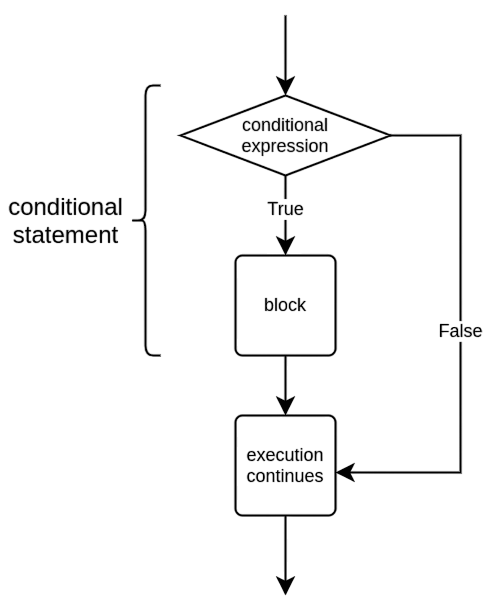
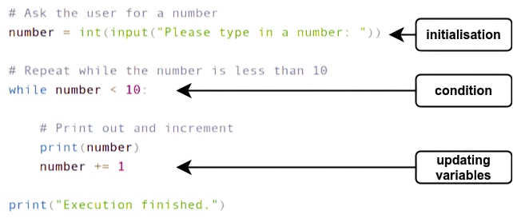
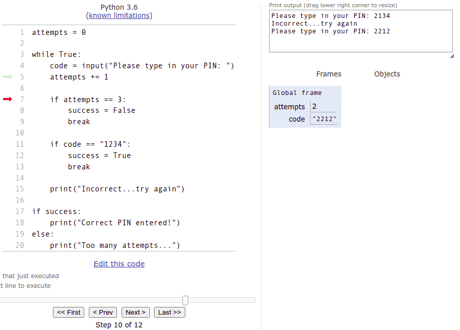

Bucles amb condicionals
Objectius d'aprenentatge
- Crear bucles
whileamb una condició. - Entendre els rols de la inicialització, la formulació de la condició i l'actualització de variables dins d'un bucle.
- Crear bucles amb tipus de condicions diferents.
Condicions i bucles while
En la secció anterior vam aprendre a utilitzar el bucle while True per repetir seccions de codi. En aquesta construcció, la condició del bucle és True, així que la condició es compleix cada vegada. Calia sortir explícitament del bucle per evitar un bucle infinit. Per exemple:
# Imprimir números fins que la variable sigui igual a 5
numero = 1
while True:
print(numero)
numero += 1
if numero == 5:
break
1 2 3 4
Per descomptat, la condició no sempre ha de ser True, sinó que pot ser qualsevol expressió booleana. L'estructura general d'una sentència while és la següent:
while <condició>:
<bloc>
La idea és que l'execució va comprovant si la condició és certa i, si ho és, executa el codi dins del bloc una vegada rere l'altra. Si la condició en algun moment és falsa, l'execució del programa continua des de la línia següent al bloc while.

En el següent bucle, tenim la condició numero < 10. El bloc dins del bucle s'executa només si la variable numero és menor que 10.
numero = int(input("Escriu un número: "))
while numero < 10:
print(numero)
numero += 1
print("Execució finalitzada.")
Escriu un número: 4 4 5 6 7 8 9 Execució finalitzada.
En aquesta estructura, la condició es comprova sempre abans que s'executi el bloc del bucle. Pot passar que el bloc no s'executi mai, com en aquest cas:
Escriu un número: 12 Execució finalitzada.
El número 12 no és menor que 10, així que el programa no imprimeix cap número.
Inicialització, condició i actualització
Per crear un bucle, sovint cal incloure tres passos diferents: inicialització, condició i actualització de les variables d'iteració.
La inicialització fa referència a establir el valor inicial de les variables utilitzades dins la condició del bucle. La condició defineix durant quant de temps s'executarà el bucle. Finalment, a cada repetició del bucle, les variables implicades s'actualitzen, de manera que cada iteració acosta el bucle a la seva conclusió.

Si qualsevol d'aquests tres components falta, el bucle probablement no funcionarà correctament. Un error típic és oblidar el pas d'actualització:
numero = 1
while numero < 10:
print(numero)
print("Execució finalitzada.")
Aquí, el valor de la variable numero mai canvia. El programa queda atrapat en un bucle infinit, repetint el mateix codi una vegada i una altra fins que l'usuari atura l'execució, per exemple prement Control + C:
1 1 1 1 1 (continua ad infinitum…)
Exercici: Imprimir números parells
Escriu un programa que imprimeixi tots els números parells entre 2 i 30 utilitzant un bucle. Imprimeix cada número en una línia separada.
2 4 6 8 etc...
Exercici: Corregeix el codi — Compte enrere
El programa següent té alguns errors de sintaxi:
print("Preparat?")
numero = int(input("Escriu un número: "))
while numero = 0:
print(numero)
print("Ja!")
Corregeix-lo perquè imprimeixi el següent:
Preparat? Escriu un número: 5 5 4 3 2 1 Ja!
Pista: No utilitzis un bucle while True en aquest exercici!
Escriure condicions
Qualsevol expressió booleana o combinació d'aquestes és una condició vàlida dins un bucle. Per exemple, el programa següent imprimeix cada tercer número, però només mentre el número sigui menor que 100 i no divisible per 5:
numero = int(input("Escriu un número: "))
while numero < 100 and numero % 5 != 0:
print(numero)
numero += 3
Escriu un número: 28 28 31 34 37
Escriu un número: 96 96 99
Quan l'entrada és 28, el bucle acaba amb el número 37, perquè el següent seria 40, que és divisible per 5. Quan l'entrada és 96, acaba amb el 99, ja que el següent, 102, no és menor que 100.
Sempre has d'assegurar-te que el bucle acabarà algun dia. El següent programa pot acabar o no, segons l'entrada:
numero = int(input("Escriu un número: "))
while numero != 10:
print(numero)
numero += 2
Escriu un número: 4 4 6 8
En qualsevol altre cas, el bucle s'executa indefinidament, ja que la variable mai arribarà a ser igual a 10.
Exercici: Números entre zero i límit
Escriu un programa que demani un número a l'usuari i després imprimeixi tots els enters majors que zero però menors que el número introduït.
Límit superior: 5 1 2 3 4
Pista: No utilitzis True com a condició del bucle!
Consells de depuració
Imagina que estàs escrivint un programa una mica més complex, com el del següent exercici sobre potències de dos. Els primers intents podrien semblar-se a això:
limit = int(input("Límit superior:"))
numero = 1
while numero == limit:
# més codi
Aquest codi probablement no funcionarà com esperes a la primera. Potser hauràs de provar-lo moltes vegades abans que funcioni correctament.
Per fer proves més ràpides, pots "codificar" directament el valor de l'entrada:
# provem amb un valor fix
limit = 8 # int(input("Límit superior"))
numero = 1
while numero == limit:
# més codi
La depuració amb instruccions print s'ha mencionat diverses vegades en la part anterior del curs. Els programes que se't demanarà escriure seran cada cop més complexos a mesura que avancis, i la quantitat de depuracions que hauràs de fer també augmentarà en conseqüència. Les causes més comunes dels errors solen estar en les condicions que finalitzen els bucles: poden funcionar correctament amb algunes entrades però fallar amb d'altres, i no sempre és evident el motiu.
Per això, és el moment d'incorporar de manera habitual l'ús d'instruccions print per depurar dins de la teva pràctica de programació, si encara no ho has fet. Pots trobar instruccions detallades sobre la depuració en la primera i la quarta secció de la part anterior del curs.
A més de les instruccions print, hi ha moltes altres eines que es poden utilitzar per depurar. Una d'aquestes és l'eina de visualització del lloc web Python Tutor. Aquesta eina et permet executar el teu codi línia per línia i mostra els valors emmagatzemats a les variables en cada pas.
El codi lleugerament erroni de l'exemple de depuració de la secció anterior es visualitza amb Python Tutor a la següent imatge:

La fletxa vermella assenyala el punt on es troba l'execució del programa en aquell moment. L'eina mostra què s'ha imprès fins ara i també quin valor té cada variable en cada pas. L'execució avança línia a línia quan prems Next.
Tot el que cal fer per utilitzar l'eina de visualització és copiar el teu codi i enganxar-lo a la finestra de codi de l'eina. Tingues en compte que l'eina té algunes limitacions respecte a la versió de Python utilitzada en aquest curs. Si et trobes amb missatges d'error críptics, potser és millor provar algun altre mètode de depuració.
Els programadors amb més experiència rarament són grans usuaris d'aquesta eina de visualització, però per a un principiant pot ser una ajuda molt valuosa. La programació, com a disciplina, té poc marge per a l'atzar o la sort. És essencial que el programador entengui quins valors genera el seu codi en cada moment de l'execució. Si els valors emmagatzemats a les variables no són els esperats, és molt probable que hi hagi un error en el programa.
Tant l'eina de visualització com les instruccions print per depurar són dues maneres excel·lents perquè un programador vegi amb els seus propis ulls que el seu programa fa exactament allò que s'esperava.
Exercici: Potències de dos
Escriu un programa que demani un límit superior i imprimeixi números de manera que cada número sigui el doble de l'anterior, començant per 1. L'execució acaba quan el següent número superaria el límit.
L'execució del programa finalitza quan el següent nombre a imprimir seria major que el límit establert per l'usuari. No s'han d'imprimir nombres majors que el límit.
Límit superior: 8 1 2 4 8
Límit superior: 20 1 2 4 8 16
Límit superior: 100 1 2 4 8 16 32 64
Pista: No utilitzis True com a condició del bucle!
Què són les potències de dos? La primera potència de dos és el nombre 1. La següent és 1 per 2, que és 2. La següent és 2 per 2, que és 4. La següent és 4 per 2, que és 8, i així successivament. Cada potència de la seqüència es multiplica per dos per produir la següent.
Exercici: Potències de base n
Modifica el programa anterior perquè l'usuari també introdueixi la base que es multiplica cada vegada (en l'exercici anterior la base era sempre 2).
Límit superior: 27 Base: 3 1 3 9 27
Límit superior: 1234567 Base: 10 1 10 100 1000 10000 100000 1000000
Exercici: La suma de números consecutius, versió 1
Escriu un programa que demani un límit a l'usuari i calculi la suma dels números consecutius (1 + 2 + 3 + …) fins que la suma sigui com a mínim igual al límit.
Límit: 2 3
Límit: 10 10
Límit: 18 21
Construir cadenes de text
Ja vam aprendre que és possible "construir" cadenes de text a partir d'altres més curtes utilitzant l'operador +. Per exemple:
paraules = "orgull"
paraules = paraules + ", prejudici"
paraules = paraules + " i python"
print(paraules)
orgull, prejudici i python
L'operador += permet escriure-ho de manera més compacta:
paraules = "orgull"
paraules += ", prejudici"
paraules += " i python"
print(paraules)
Això també funciona amb f-strings, si vols incloure valors de variables dins la cadena:
curs = "Introducció a la Programació"
nota = 4
veredicte = "Has obtingut "
veredicte += f"la nota {nota} "
veredicte += f"al curs {curs}"
print(veredicte)
Has obtingut la nota 4 al curs Introducció a la Programació
En l'exercici anterior has calculat la suma de números consecutius afegint un nou valor dins un bucle. El mateix concepte s'aplica a les cadenes: pots anar afegint parts noves dins un bucle. Aquesta tècnica serà útil en el següent exercici.
Exercici: La suma de números consecutius, versió 2
Escriu una nova versió del programa anterior que, a més del resultat, mostri també el càlcul realitzat.
Límit: 2 La suma consecutiva: 1 + 2 = 3
Límit: 10 La suma consecutiva: 1 + 2 + 3 + 4 = 10
Límit: 18 La suma consecutiva: 1 + 2 + 3 + 4 + 5 + 6 = 21
Pots suposar que el número introduït per l'usuari és sempre igual o superior a 2.
Conceptes clau
- Depuració: procés de detectar i corregir errors en un programa.
- Inicialització: establir el valor inicial de les variables que controlen el bucle abans de començar la seva execució.
- Condició: expressió lògica que es comprova abans de cada iteració per decidir si el bucle continua o s'atura.
- Actualització: modificar les variables de control dins del bucle per acostar-se a la condició de sortida i evitar bucles infinits.
- Condicions de sortida: elements que determinen quan acaba un bucle; poden ser una font freqüent d'errors.